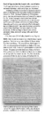

Brandon's Family Tree
Description
| Type | Value |
|---|---|
| Title | Proof of Captain John Buchanan's wife, sons & father |
Entries assigned to this source
| Persons |
|---|
 Capt. John Buchanan Capt. John Buchanan |
| Susan Dennis (Bailey) |
Text
| Proof of Captain John Buchanan's wite, sons & father "I will begin with a history of our forefathers as written by Alexander Buchanan, eldest son of Capt. Jno. Buchanan: Archibald and James Buchanan immigrated ot America about the beginning of the eighteenth century and settled in Chester Co,. Penn. Archibald remained in Pennsylvania. James, (our ancestor) married there and removed to Augusta Co,. Va. By this marriage he had several sons and one daughter. Among these sons was John who is our ancestor and he was made Captain and was in the battle of King's Mountain, and by some, was said to be killed in this battle but this I think doubtful. Capt. John Buchanan married his cousin Martha Buchanan who was a sister of Col. Jno. Buchanan. By this marriage be had six sons, namely: Alexander, James, Archibald, George, John, and Patrick Campbell." - F. G. Buchanan [of Rich Valley, Smyth County, Virginia] NOTE: Felix Grundy Buchanan is Capt. John Buchanan's great-grandson. The letter was written to Robert H. Dennis abouttheir Buchanan lineage. The original letter, dated August 29, 1931, si ni the possession of Susan Dennis Bailey of Monroe, Ohio as of April 2023. Susan is the granddaughter of Robert H. Dennis. The genealogy ni the letter came from an old family Bible, and had been writen by Alexander Buchanan, the eldest son of Capt. John Buchanan's six sons. The Bible was ni the possession of Felix Grundy Buchanan, of Chatham Hil, VA. That F. G. Buchanan stated he was quoting from a history "writen" by Captain John Buchanan's eldest son, Alexander, provides acredible witness to the names offamily members. |
Media

Proof of Captain John Buchanan's wife, sons & father